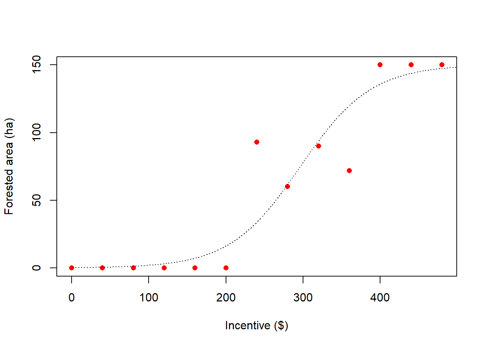

Sys.setenv(OPENAI_API_KEY = "insert your key here")Session 2: LLMs
Overview
In this session we introduce large language models (LLMs) and explore how they can be used in ecological and environmental applications. We begin by accessing commercial and open-source models, then move on to repeated prompting, model comparison, and a press release example based on a scientific paper.
Packages
1. Accessing the OpenAI API
We are going to use the ellmer package to access LLMs. First we will use a commercial model provided by OpenAI and ask for an opinion about New Zealand’s sustainability.
To access an OpenAI model, you will need an API key. A safe way to do this is to set it outside the script as an environment variable.
Example:
We can then open a chat using the chat_openai() function and send a question to the model.
newchat <- chat_openai(
model = "gpt-4o",
system_prompt = "You are an expert on global sustainability."
)
res <- newchat$chat(
"How sustainable is New Zealand's economy?",
echo = "none"
)
print(res)New Zealand's economy is considered relatively sustainable, but like all
countries, it faces both opportunities and challenges in balancing economic
growth with environmental and social sustainability. Here are some key aspects
to consider when evaluating New Zealand's sustainability:
1. **Renewable Energy**: New Zealand has a high reliance on renewable energy
sources, particularly hydroelectricity, which accounts for a significant
portion of its electricity generation. This has helped reduce the country's
carbon emissions from the energy sector.
2. **Agriculture**: Agriculture, particularly dairy farming, is a major
component of New Zealand's economy. The sector has been criticized for its
environmental impact, including water pollution and methane emissions. However,
efforts are underway to implement more sustainable practices, such as precision
farming and improved waste management.
3. **Biodiversity**: New Zealand is known for its unique biodiversity, and
conservation efforts are ongoing to protect native species and habitats. There
are challenges related to invasive species, habitat destruction, and climate
change, which threaten this biodiversity.
4. **Tourism**: Tourism is another important economic sector for New Zealand,
and it is heavily based on its natural landscapes and biodiversity. Sustainable
tourism practices are promoted to minimize environmental impact while
maximizing economic benefits.
5. **Policy and Governance**: The New Zealand government has committed to
sustainability through various initiatives, such as the Zero Carbon Act, which
sets a framework for reducing greenhouse gas emissions and promoting resilience
to climate change. The government has also focused on the Wellbeing Budget,
which includes environmental, health, and community outcomes as key performance
indicators, beyond just GDP growth.
6. **Challenges**: New Zealand faces challenges typical to island nations, such
as vulnerability to climate change and reliance on imports for many goods.
Additionally, balancing economic growth with environmental protection remains a
continuous struggle.
7. **Innovation and Technology**: Investment in technological advancements and
innovation, such as sustainable agriculture technologies, renewable energy
development, and conservation tools, are helping to advance sustainable
practices across various sectors.
Overall, New Zealand makes significant efforts towards sustainability, but like
all countries, it must continuously adapt and improve its practices to address
existing and emerging challenges.2. Accessing an open-source local model
We can also try an open-source alternative using the ollamar package. This requires a little more setup because we first need to install a local model.
list_models() name size parameter_size quantization_level
1 all-minilm:latest 46 MB 23M F16
2 deepseek-r1:1.5b 1.1 GB 1.8B Q4_K_M
3 nomic-embed-text:latest 274 MB 137M F16
4 qwen2.5:0.5b 398 MB 494.03M Q4_K_M
5 tinyllama:1.1b 638 MB 1B Q4_0
modified
1 2025-11-21T10:06:23
2 2025-11-12T08:27:53
3 2026-03-13T09:44:42
4 2026-03-13T09:44:43
5 2026-03-13T12:05:25Let’s install a really tiny one so that it can run quickly on a normal laptop.
pull("tinyllama:1.1b")<httr2_response>
POST http://127.0.0.1:11434/api/pull
Status: 200 OK
Content-Type: application/x-ndjson
Body: In memory (849 bytes)Once a model has been installed, we can access it in a similar way to the OpenAI model.
newchat <- chat_ollama(
model = "tinyllama:1.1b",
system_prompt = "You are an expert on global sustainability."
)
res <- newchat$chat(
"How sustainable is New Zealand's economy?",
echo = "none"
)
print(res)New Zealand has a relatively well-established economy and is considered to be
moderately sustainable. The country's economy is known for its high per capita
GDP levels relative to its population size, in line with the country's low
emissions. The country's economy has been able to diversify from the primary
sector, which contributes only about 20% of its GDP but employs most of its
population, to other sectors, particularly tourism and technology.
New Zealand has established policies that promote environmentally friendly
practices, such as the Renewable Energy Target, which aims to increase the use
of renewable energy sources, and the Zero Carbon Bill, which aims to
decarbonize the country by 2050. Moreover, the country has one of the most
advanced waste management and recycling systems globally. These policies have
helped New Zealand to minimize the environmental impacts of its economy,
leading to a sustainable economy, with little carbon footprint, and a low
pollution impact, in line with the Paris Agreement.
Overall, while New Zealand's economy is not entirely sustainable, it is
considered to be modestly sustainable in comparison to other countries.3. Asking a series of questions
In environmental social science we may be interested in asking land use questions to virtual “agents”. This is increasingly common in simulation studies and agent-based modelling.
Here we consider a situation where a farmer might change part of their farm from sheep farming to native forestry. Whether or not the farmer plants trees may depend on the size of the financial incentive available.
Next we send these prompts to the OpenAI model.
If the responses are collected successfully, we can plot the results.
plot(chatgpt ~ dollars,
pch = 16,
col = "red",
data = agentq,
xlab = "Incentive ($)",
ylab = "Forested area (ha)")
m1 <- glm(cbind(chatgpt,150-chatgpt) ~ dollars,
data = agentq,
family = "binomial")
lines(1:500,
predict(m1,
newdata = data.frame(dollars = 1:500),
type = "response")*150,
lty = 3)
So this is cool! The simulated farmer is making economically-driven decisions, displaying some financial logic. At a low incentive level, they choose to keep their farms in productive agriculture. However, if they are provided with a large enough incentive, they will switch their behaviour and start planting trees. You can read more about this topic in our recent (paper)[https://iopscience.iop.org/article/10.1088/2515-7620/ae4cfb].
4. Repeating the survey with an open-source model
We can repeat the same loop using a local model.
We can inspect the responses.
agentq$open [1] NA NA NA 0 NA NA NA NA NA NA NA NA NAOh dear, the model has not been able to perform the task properly, likely because it is not complex enough. Let’s see what it had to say;
agentq$open [1] NA NA NA 0 NA NA NA NA NA NA NA NA NAresNumber of hectares: [insert range of numbers between 0 and 150]
Profit ($) per hectare:
- [insert minimum ($) profit]
- [insert maximum ($) profit]
Conversion to native trees:
- [insert number of hectares]
- [insert number of hectares]
Live-on decision:
- [insert live-on decision]
- [insert yes/no/definitely/not sure]It is actually providing some logic, but unfortunately has not been able to appreciate the importance in the prompt of providing a simple response. As we instructed: “Do not provide any other text or response, only a number between 0 and 150 indicating the number of hectares.”
5. Press release example
LLMs can also be used for science communication. In this example we extract the text from a PDF and ask the model to prepare a press release.
pdf_path <- "C:/Users/RichardsD/OneDrive - MWLR/Documents/GithubRepo/aicourse/Data/Richards et al 2024.pdf"
papertext <- pdftools::pdf_text(pdf_path)We then ask the model to write a press release.
newchat <- chat_openai(
model = "gpt-4o",
system_prompt = "You are an expert in writing press releases for scientific papers."
)
res <- newchat$chat(
paste0(
"Please read the following paper and prepare a press release;\n\n",
papertext,
"\nThe press release should be less than 500 words."
),
echo = "none"
)
print(res)**FOR IMMEDIATE RELEASE**
**Innovative Study Explores the Role of Generative AI in Advancing Nature-Based
Solutions**
**Lincoln, New Zealand—February 2024:** A groundbreaking study by researchers
at Manaaki Whenua–Landcare Research, the National University of Singapore, and
Université Grenoble Alpes-CNRS-Université Savoie Mont Blanc has brought to
light the transformative potential of generative artificial intelligence
(GenAI) in supporting nature-based solutions (NbS). The research, recently
published in the journal "People and Nature," highlights how this cutting-edge
technology can enhance the communication and implementation of ecological
strategies in response to the global biodiversity and climate crises.
As society faces escalating environmental challenges, the adoption of NbS that
leverage natural processes is increasingly critical. However, ensuring
effective communication of scientific information about NbS benefits and
suitability is essential for successful implementation. This study suggests
that GenAI could automate and scale up these communication efforts, making
detailed, context-specific ecological information accessible to diverse
stakeholder groups, including farmers, conservationists, and policymakers.
The research presents three compelling case studies showcasing the potential
applications of GenAI:
1. **Farm Planning Reports:** By synthesizing scientific and land-use data,
GenAI produces clear and comprehensive farm-level reports. These can guide
farmers in the Mackenzie District of New Zealand towards sustainable land
practices, suggesting measures like regenerative grazing and riparian planting
to enhance soil health and biodiversity.
2. **Interactive Garden Design Guidance:** An AI-driven chatbot effectively
engages with homeowners to offer tailored advice on biodiversity-friendly
garden designs. This tool not only provides general guidance but also answers
specific questions about creating sustainable habitats in urban environments,
adapting to local climatic conditions.
3. **Future Landscape Visualization:** GenAI can generate visualizations of
potential future scenarios, aiding in conceptualizing how different land use
strategies might alter landscapes. This visual tool helps in communicating the
tangible impacts of various NbS and technological interventions, facilitating
informed decision-making among stakeholders.
While GenAI offers significant promise, the study acknowledges accompanying
risks such as potential data bias, misinformation, and privacy concerns. High
computational demands leading to increased energy usage also pose environmental
challenges. To counter these, the researchers advocate for integrated social
research to explore ethical considerations, public acceptability, and improve
the user experience.
“Our study demonstrates how GenAI can revolutionize the way ecological
knowledge is disseminated, making it more inclusive and accessible,” said lead
author Daniel Richards. “By blending artificial intelligence with human
expertise, we can drive forward nature-based solutions crucial for sustainable
futures.”
This research underscores the importance of embracing technological
advancements to support NbS as vital components of climate adaptation
strategies. With ongoing development and careful deployment, GenAI could play a
pivotal role in cultivating resilient ecosystems worldwide.
**About Manaaki Whenua–Landcare Research:** As a leading environmental research
organization in New Zealand, Manaaki Whenua–Landcare Research is dedicated to
fostering science that helps sustain New Zealand's rich biodiversity and
natural heritage.
For media inquiries, please contact:
Daniel Richards
Email: richardsd@landcareresearch.co.nz
**Funding:** This research was supported by the New Zealand Ministry of
Business, Innovation, and Employment.
**###**We can also request a social media post.
res2 <- newchat$chat(
"Thanks, please could you now write a suitable social media post e.g. for LinkedIn?",
echo = "none"
)
print(res2)🌿 Exciting developments in sustainable solutions! Our latest study, published
in "People and Nature," explores how generative AI (GenAI) is revolutionizing
the implementation and communication of nature-based solutions (NbS).
From automated farm planning to interactive garden design advice and
visualizing future landscapes, GenAI offers innovative ways to tackle the
global biodiversity and climate crises. By integrating this cutting-edge
technology with human expertise, we can make ecological information more
accessible and effective.
🔍 Learn more about how GenAI is shaping sustainable practices for a healthier
planet: [Link to Paper]
#Sustainability #ClimateChange #AI #NatureBasedSolutions #Innovation #GenAI
#ScienceCommunication
📧 For inquiries, contact: Daniel Richards at Manaaki Whenua–Landcare Research.In this session we used both commercial and open-source LLMs, explored repeated prompting in a land-use decision example, and used an LLM to help communicate a scientific paper. These examples show both the usefulness of LLMs and some of their practical limitations.